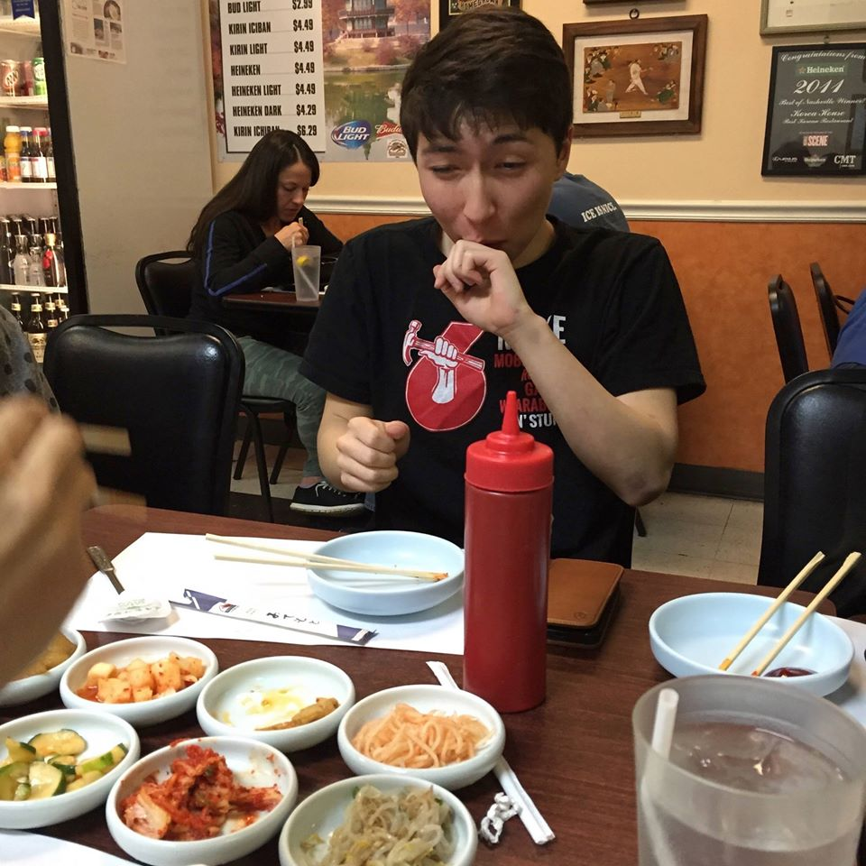
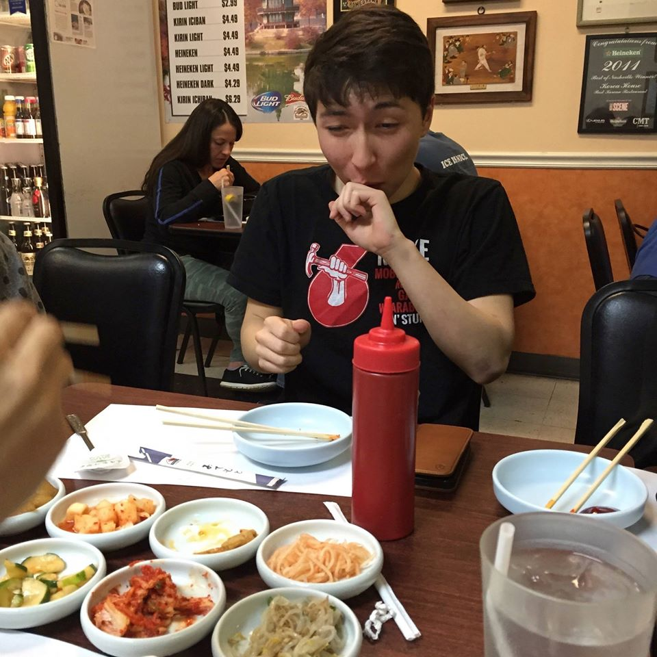
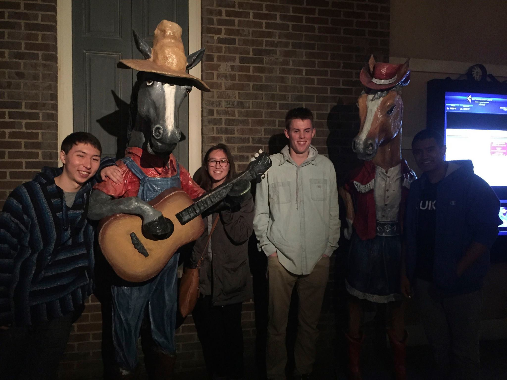
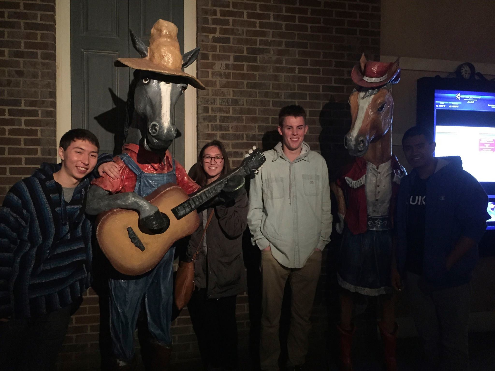
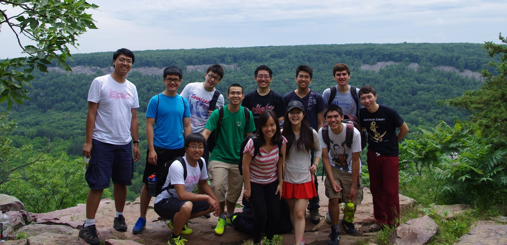
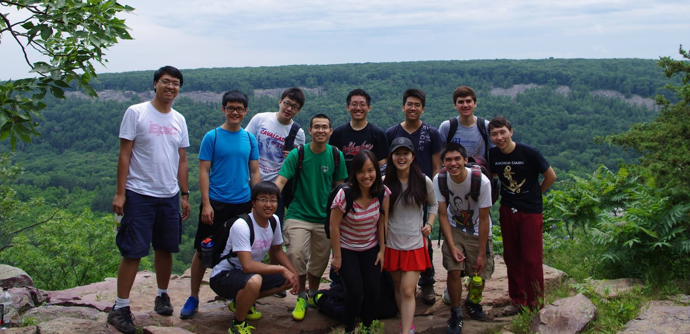

About Me

 

 

 



Theoretically, we meet by chance, on a sweltering August Tuesday. As you're walking down 21st Avenue, I pass you on the sidewalk, zipping by on my half-sized longboard. You're carrying too many groceries (because two trips is for the weak), and my sudden appearance startles you into dropping your bags. I slide to a stop and apologize, helping you gather the bananas and Bagel Bites that spilled onto the floor.
You look pretty exhausted, so I offer to help you carry your bags. You graciously accept, and we begin walking to your apartment down the road. After a moment of walking in awkward silence, we engage in the usual smalltalk.
- "So, where are you from?"
- "Well, I was born in Ohio, but I've lived in Brentwood for most of my life. It's like 20 minutes south of Nashville."
- "And now you go to Vanderbilt?"
- "Yep."
- "How is it?"
- "It's fine. According to Princeton Review, we're the happiest students in the country."
- "How do they tell? Is there like a survey or something?"
- "Beats me. They probably make it all up anyways."
We round the corner on Division Street. A country music cowboy passes us in the opposite direction, carrying an acoustic guitar in a case. We stare at him silently and judge him for being so mainstream. I bet he only knows like four chords.
- "What's your major?"
- "Computer Science."
- "Oh! I keep hearing about that, but I have no idea what it is."
- "It covers a lot of topics. I like to think of it as the mathematics of computers. Theoretically, what are computers capable of? How can we make them faster? Stuff like that."
- "So you're not IT?"
- "No. Not really. I mean, some CS people are more practical and write programs for businesses, others are poor and write research papers."
- "So which are you?"
- "Ask me in a year. I'm actually applying to grad school right now. I think Artificial Intelligence is really cool, but I also enjoy not being poor."
The conversation drifts over to your interests, and we discover we have a mutual love for Japanese anime. You actually spent a year in Japan and can speak Japanese nearly fluently. I invite you to come have dinner at my dorm some time. It's an international dorm with a really good cafeteria. We have a bunch of halls that each speak a different language, and every week day we eat dinner together to practice.
As we arrive at your apartment, you hand me a business card. It turns out you're actually the CEO of a unicorn startup in the Bay area. You've been scouting me for weeks; this was all just an elaborate test to ensure that I'm not an android sent by Larry Page to spy on your company. But now that you're sure I'm a real person, you offer me a job on the spot. You wave goodbye and say, "see you soon," as the elevator doors slide shut.
My hand starts vibrating and beeping as soon as you leave. I look at my palm. The letters "L.P." are flashing on it in bright red. I bring my hand up to my ear like it's a phone, and an antenna shoots up out of my thumb.
- "So, how did it go?"
- "I'm in."
The End